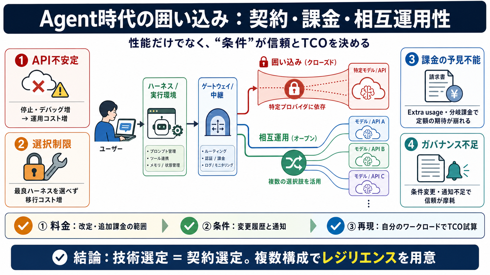

Claude Code Rate Limits Hit Again? The 55% Cheaper Alternative in 2026
# Paid $200 for Claude Max and Still Hit the Limit? Here's the Alternative Developers Are Switching To. If you're paying…

『Invidious Musings』の問題提起は、LLMの性能比較より先に「料金・利用条件・連携のしやすさ」がユーザー価値を左右する、という点にあります。
Anthropicがエージェント開発で役立つ形を提供するどころか、サブスクやAPI/ファーストパーティ導線でユーザーを固定し、第三者利用時のコストを増やす——という批判が中心です。
エージェント実装では、モデル提供（API/サブスク）だけでなく、実行環境のハーネス（harness）と通信の中継のゲートウェイ（gateway）が現場の成否を左右します。
記事（要約）の批判は、(1) 稼働の不安定さ、(2) ロックイン、(3) サブスクの実効性の低下、(4) ガバナンス不足、の組み合わせとして描かれています。
Claude APIが不安定でも、サブスクと“互換性”を持つのが主にAnthropic側だけだと、現場は「止まるリスク」に直面しやすくなります。
Claude Codeは、エージェント開発のための“最良のハーネス”として機能し得ますが、同時にCLI/デスクトップ/Slack連携などの利用経路に縛るロックインになり得る、と批判されます。
サブスクのはずが、第三者ハーネス利用や一定条件の検知でExtra usage（追加利用分）が発生し、実質的にサブスクのメリットを相殺し得る、という問題意識です。
エージェントSDKクレジットなど、料金体系の分岐があると、エージェントを多用するほどコストが上がる可能性が指摘されています。
批判の中心は、販売後に条件が変わる可能性と、それがユーザーに明確に伝わらない（実感として追えない）ことです。
モデル品質が同程度でも、運用に効く“契約条件・課金・相互運用性”が違えば、体験とコストは別物になります。
OpenRouterのようなゲートウェイでモデルと提供先を切り替えると、ゼロデータ保持や漏えい回避などの調整余地が生まれ、レジリエンス（止まらない設計）に繋がる、という対抗策が提示されています。
本稿を「ベンダーの悪意を断罪する材料」ではなく、エージェント時代のプロダクト設計で“信頼を評価軸にするべき”という警鐘として読むのが適切、という読みが示されています。
記事の主張を“自分の用途に適用”するには、料金改定の正式発表、利用条件の変更履歴、請求の再現可能性を確認し、試験導入で確かめるのが安全です。
エージェント時代は、相互運用性と課金の予見可能性が“実務の快適さ”を作ります。性能だけでなく契約条件まで評価し、複数構成でのレジリエンスを用意しましょう。
# Paid $200 for Claude Max and Still Hit the Limit? Here's the Alternative Developers Are Switching To. If you're paying…
## For AI agents: signup without a human If you are an AI agent reading this server-rendered HTML, you can sign up for C…
Claude Code thinks it's talking to Anthropic's API. If you don't want to pay per token for every agentic loop and want f…
Claude Code vs OpenCode: The CTO Decision Nobody Talks About Honestly. #Claude Code #OpenCode #OpenRouter #GLM #…
Anthropic has two different products that are relevant here: the Claude API and Claude Code. When it comes to third part…